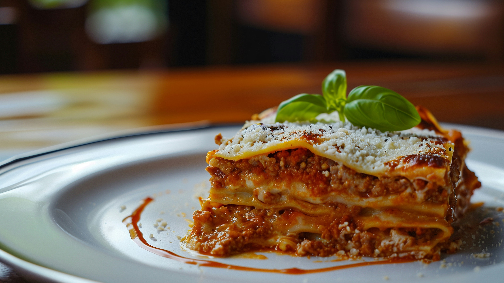

Lasagna is a classic Italian dish that consists of layers of pasta, meat sauce, and cheese. It is typically made with ground beef or pork, tomato sauce, and a variety of cheeses such as ricotta, mozzarella, and Parmesan. Read more..

Pasta Carbonara is a traditional Italian pasta dish made with eggs, cheese, pancetta, and pepper. The dish is typically made with spaghetti or fettuccine, and the sauce is created by tossing the hot pasta with the egg and cheese mixture, which creates a creamy and flavorful sauce. Read more..

Pizza Napoletana is a traditional Italian pizza that originated in Naples. It is made with a thin and soft crust, topped with San Marzano tomatoes, fresh mozzarella cheese, basil leaves, and a drizzle of olive oil. The pizza is cooked in a wood-fired oven at high temperatures, which gives it a unique flavor and texture. Read more..